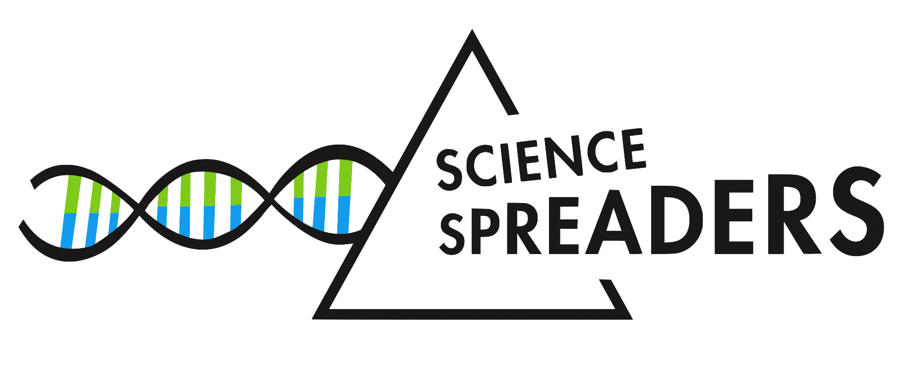

Biohacking:
Demokratisierung der Wissenschaft?
Welche Rolle soll Wissenschaft in unserer Gesellschaft spielen und inwiefern soll sich jeder Bürger beteiligen? Was ist der Rechtsrahmen, in dem sich DIY-Biologen bewegen und was tragen sie zum wissenschaftlichen Fortschritt bei? Wie setzt man ethische und gesetzliche Richtlinien innerhalb und außerhalb einer Institution durch? Hören Sie bei uns die Meinungen von Experten, die diese Fragen aus verschiedensten Blickwinkeln erkunden, und diskutieren Sie, wie in der Biologie geforscht werden soll
Erfahren Sie mehr über:
Risiken und Vorteile
Aktuelle Entwicklungen
Ethische Perspektiven
Wo und wann?
Symposium: Samstag 10/11/18. Theoretikum (INF 324). HS 1.
Führung im Archiv: tba. Anmeldung erforderlich.
Programm
Jeder Vortrag wird zwischen 20 und 30 Minuten dauern und fast alle werden auf Deutsch gehalten. Ganz am Ende wird es eine Q&A Runde geben!
Beginn: 14.00
Biohacking: past, present, future.
von Ludger Weß, Wissenschaftsjournalist und Romanautor
Biohacking – law and order
von Jens Kahrmann, aus dem Bundesamt für Verbraucherschutz und Lebensmittelsicherheit
Ideale und Prinzipien in der Bioethik und im Biohacking. Ein Vergleich.
von Joachim Boldt, aus dem Institut für Ethik und Geschichte der Medizin der Uni Freiburg
Biohacking resources for the curious minds
von Marco Raffaele Cosenza, Gründer und chairman von Biotop Community Lab e.V.
Pause
~45 min
Phage Systems? Wie Bürgerwissenschaftler die Antibiotikakrise lösen
von Rüdiger Trojok, DIY-Biology Experte und Laboratory Lead im UnternehmerTUM (TU München)
Gentechnik – Und wenn ja wie viele?
von Dominik Niopek, aktiv im IPMB und in der Forschungsgruppe für Synthetische Biologie am BioQuant (Uni Heidelberg)
Was hieße Demokratisierung der Wissenschaft?
von Christopher Coenen, aus dem Institut für Technikfolgenabschätzung und Systemanalyse (ITAS) im Karlsruher Institut für Technologie (KIT)
Podiumsdiskussion: 18.00
